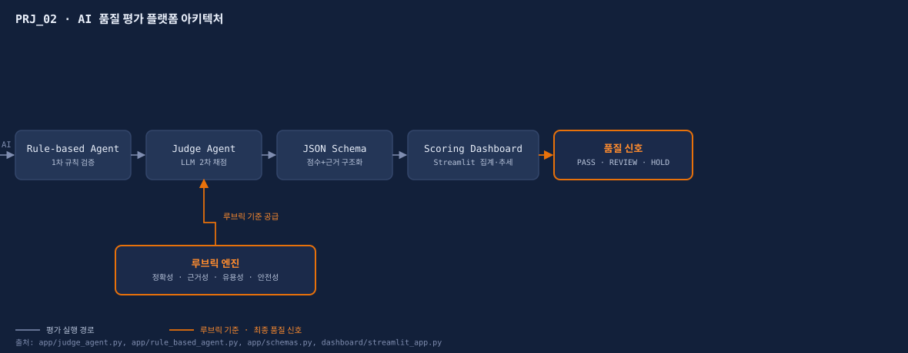
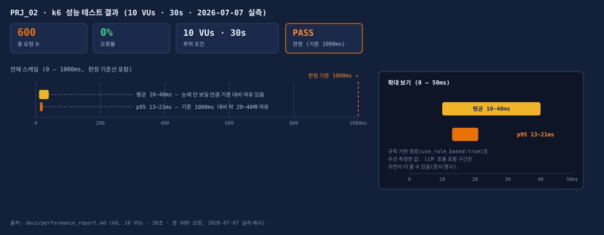

AI 품질 평가 플랫폼
일회성 테스트를 넘어, LLM 산출물의 품질을 상시 계측하는 평가 플랫폼입니다. 루브릭·Judge 프롬프트·스코어링 보드를 하나로 묶어 QA를 재사용 가능한 제품으로 만들었습니다.
// LLM Judge 파이프라인 · T-GEO AI 스코어링 보드 연계 설계 · 단독 수행
# 문제 정의 Problem
AI 산출물 품질은 매 배포마다 흔들립니다. 같은 서비스라도 실행할 때마다, 평가하는 사람마다 "품질이 괜찮다"의 기준이 달라지면 배포 판단 자체를 신뢰하기 어렵습니다. 평가 기준(루브릭)과 Judge 모델 프롬프트, 결과를 집계하는 스코어링 보드를 표준화해, 누가 언제 실행해도 같은 잣대로 품질을 계량하는 것이 목표였습니다.
# 담당 역할 My Role
개인 프로젝트로 기획부터 구현까지 단독 수행했습니다.
- 루브릭 설계
- 8축 평가 기준·가중치 정의 (RaiT 8축을 이 플랫폼의 평가 프레임으로 적용)
- Judge Agent 구현
app/judge_agent.py— LLM 기반 채점 로직,app/rule_based_agent.py— 규칙 기반 1차 검증- JSON Schema 설계
app/schemas.py— Judge 출력(점수+근거)의 구조화 스키마 정의- 스코어링 대시보드
dashboard/streamlit_app.py— 지표 집계·시각화 화면 구현- 테스트 설계
tests/18개 파일 — 정상 케이스, 레드팀(적대적 입력), 회귀 시나리오 설계
# 솔루션 설계 Solution
- 루브릭 엔진
- 지표별 채점 기준·가중치 정의, 도메인별 커스터마이즈
- Judge 프롬프트
- JSON 출력 스키마 기반의 구조화 채점(점수+근거)
- 스코어링 보드
- 지표별 점수 집계·추세 시각화, 회귀 감지
- 표준 정합
- ISO/IEC 25010 품질 특성과 매핑
# 기술 스택 Tech
# 테스트 Test
pytest 기반 자동화 테스트 18개 파일(정상 케이스·레드팀 적대적 입력·회귀 시나리오 포함)을 설계·구현하고, k6로 API 성능을 별도 검증했습니다. LLM 호출 영역은 Mock으로 대체하여 평가 로직·예외 처리·회귀 시나리오를 독립적으로 검증했습니다(실제 API 호출·과금 없음, 더미 키로 84건 전부 통과).
# 결과 Result
출처: tests/(18개 파일, 84개 테스트 함수), docs/performance_report.md(k6 10VUs·30초·총 600 요청, 2026-07-07 실측). 배포 판정용 최종 품질/결함 리포트(docs/final_quality_report.md, docs/defect_report.md)는 실행 후 자동 채워지는 골격 문서로, 별도의 정식 배포 판정 실행 기록은 아직 없습니다.
- 평가 파이프라인 표준화로 재현 가능한 품질 측정 체계 확립
- 구조화(JSON) 출력으로 자동 집계·회귀 감지 가능
- QA를 프로젝트 산출물이 아닌 재사용 자산으로 제품화
# 증거 Evidence
아래는 실제 화면 캡처가 아니라, app/judge_agent.py·config·docs/performance_report.md 등 코드·실측 데이터로 직접 그린 다이어그램·차트(SVG)입니다.

